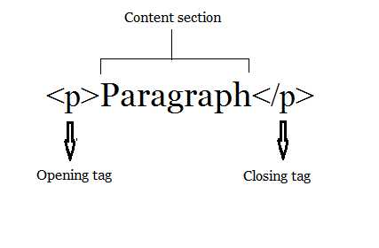

What is code? That's quite hard to say. It depends on the kind of code you're talking about. The code we're using in computer science allows us to make many things. From webpages to little flash games.
HTML is an acronym for Hyper Text Markup Language. This coding language is most commonly used to make webpages. It is also linkable to CSS and Javascript. HTML was created by a physicist named Tim Berners-Lee. HTML is written with tags. Tags look like for example, the paragraph tag. I'll explain more down below.
CSS is an acronym for Cascading Style Sheets. This coding langauge is used for visual improvement. It is also a more efficient/more organized way to style your HTML. For example, you could use the style tag on every paragraph, but that's just tedious. Using CSS, you can just put the p into a css style sheet and then just add all the visual changes in the linked sheet. It'll make your code look more organized. CSS was thought of by Håkon Wium Lie on October 10, 1994. During that time he was working with the creator of HTML, Tim Berners-lee. CSS's syntax consists of various style elements which are triggered by a certain tag in HTML which is defined in CSS by a class.
Tags are used to display and format the content created using HTML. This whole paragraph is a tag, I'm using p or the paragraph tag to write this. (The tag looks like a p with two arrows surrounding it on both sides) in front of the code is a tag. If the tag has a / in it, that means its a closing tag. These kinds of tags close off the opening tag. If a tag is left open, then the tag itself and the content will not be visible in the webpage. The picture below shows what a paragraph tag looks like. All tags in HTML have the little arrows.
